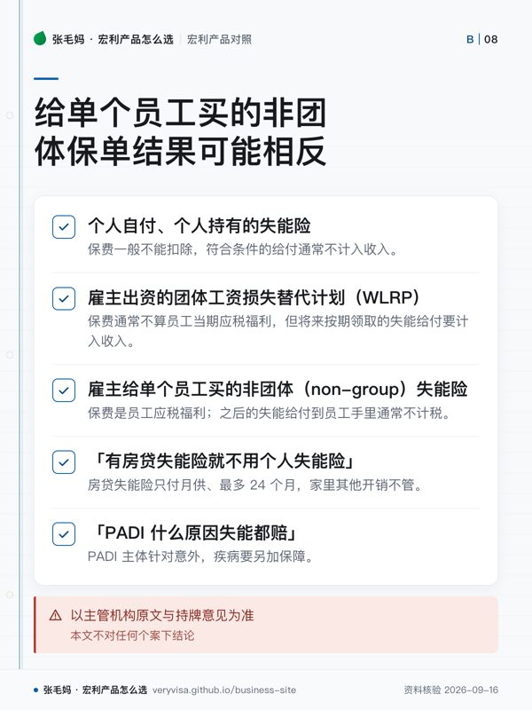

- 解决什么问题人还在但因伤病不能工作时，按月替代收入
- 月给付上限PADI 每周工作超过 30 小时者最高 $6,000，其余最高 $1,000；房贷失能险最高每月 $10,000
- 给付期PADI 可选 2 年、5 年或至 65 岁，续保至 90 岁；房贷失能险满 60 天后起付、累计最多 24 个月
- 税务后果谁付保费决定给付要不要交税——雇主付费的团体给付要交税，税后收入自付保费的不交税
知识卡
不看正文也能拿到这一页的核心规则：先看导读，再看图。点图放大，左右翻页。
- 先看先看起算时点，它决定失能后何时开始进入月度给付。
- 易漏图里没展开完整失能定义与除外责任，判断个案要回合同核对。
- 下一步去按产品，带每周工时与现有保障找持牌专业人士。

- 先看先分清谁出保费、是团体还是非团体，再判断两端的税务处理。
- 易漏共同出资不能按公司缴费比例直接推算；员工全额自付的团体安排另有规则。
- 下一步去「按税务问题」，带合同与缴费记录找持牌专业人士核对。
失能险保护的是挣钱能力。挑它要看三个数：每月能给多少、从失能第几天开始给、能给多久； 再看一个常被忽略的条件——保费由谁付，因为这决定了给付到手时是税前还是税后。
重疾险是「确诊给一笔」，失能险是「不能工作按月给」，去看重疾险比较两者的分工； 公司替员工付保费时的税务处理，去看寿险的钱在税上怎么走。
一句话
失能险保护的是「挣钱能力」：人还在但因伤病不能工作时按月给钱；同样的月给付，谁付保费决定了到手是税前还是税后。
事实清单
- Personal Accident Disability Insurance（PADI）针对意外造成的完全或部分失能，按合同提供月度收入给付，可加疾病保障。✅源
- PADI 月给付上限：每周工作超过 30 小时者最高 $6,000，其余情况最高 $1,000。✅源
- PADI 给付期可选 2 年、5 年或至 65 岁，续保至 90 岁。✅源
- PADI 配套有住院现金产品 Cash Hospital。✅源
- Mortgage Disability Insurance 在完全失能满 60 天后代付房贷月供，最高每月 $10,000，累计最多 24 个月；投保资格是 18–64 岁的加拿大居民、且是住宅按揭的借款人、共同借款人或担保人。✅源
- Synergy 把失能与寿险、重疾放进同一个 $100,000 至 $500,000 的共享保障池。✅源
- PADI 的给付起算时点可选失能第一天、满一个月或满四个月，月给付超过 $2,000 的部分要与其他保障整合（integrated）✅源；完整的失能定义与除外责任以合同为准，官方样本合同页提供 PADI 的样本合同 PDF。✅源
- Manulife CPA Ontario 会员计划 FAQ 写明：雇主付费的团体失能给付要交税，会员用税后收入自付保费的失能给付不交税（该计划为特定会员群体，不能外推所有产品）。✅源
与同类产品比较
口径：原料没有抓到 Manulife 个人长期失能险（非意外型）的官方页，也没有其他公司失能险的官方数字；本表只比 Manulife 现有三种与失能相关的入口。
| 机构／产品 | 触发条件 | 给付方式 | 上限 | 钱给谁用 |
|---|---|---|---|---|
| Manulife PADI | 意外致完全或部分失能，可加疾病 ✅源 | 按月 ✅源 | 每月 $6,000（周工作超 30 小时）✅源 | 按月现金，用于日常开支或替代收入 ✅源 |
| Manulife Mortgage Disability | 完全失能满 60 天 ✅源 | 代付房贷月供 ✅源 | 每月 $10,000、最多 24 个月 ✅源 | 只管房贷 ✅源 |
| Manulife Synergy | 失能／重疾／身故之一 ✅源 | 从共享池支付 ✅源 | 池子 $100,000–$500,000 ✅源 | 给付归被保险人，但会减少可用保额 ✅源 |
税务后果
- 个人自付、个人持有的失能险：保费一般不能扣除，符合条件的给付通常不计入收入。✅源
- 雇主出资的团体工资损失替代计划（WLRP）：保费通常不算员工当期应税福利，但将来按期领取的失能给付要计入收入。✅源
- 雇主与员工共同出资：不是「公司付六成、给付就六成应税」，而是给付减去员工以前没用过的自付保费后计入收入。✅源
- 官方算例（IT-428 附表 1975 年那一行）：当年领 $1,000；1971 年后累计领 $1,740 减去 1967 年后累计自付保费 $980 得 $760；取两者较小的 $760 按 6(1)(f) 计入收入。✅源
- 真正由员工 100% 承担保费的团体计划，给付通常不计税；CRA 不接受出险后才回头改成员工付费。✅源
- 雇主给单个员工买的非团体（non-group）失能险：保费是员工应税福利 ✅源；之后的失能给付到员工手里通常不计税——和团体计划正好相反。✅源
- 「办公室营运费用」保障走的是报销逻辑，不能套个人收入替代规则：CPA Ontario 会员计划的这款按月报销企业或合伙正常发生的营运开支，保额每月 $100 到 $10,000（该计划只对 CPA Ontario 会员开放，别外推到其他人群）。✅源
- 以主管机构原文与持牌意见为准，本文不对任何个案下结论；公司持有或员工兼股东的失能安排找 CPA 逐项确认合同与缴费记录。
常见误区
- 「保险理赔都免税」——雇主出资的团体失能计划，按月给付通常要交税。✅源
- 「公司付失能险保费，赔款一定要交税」——只在标准团体 WLRP 下成立；给单个员工买的非团体保单结果可能相反。✅源
- 「有房贷失能险就不用个人失能险」——房贷失能险只付月供、最多 24 个月，家里其他开销不管。✅源
- 「PADI 什么原因失能都赔」——PADI 主体针对意外，疾病要另加保障。✅源
- 「出险了再跟公司商量改成自己付保费」——CRA 不接受事后改变计划的税务性质。✅源
事实来源
该问经纪的问题（抄下来直接问）
- 我是自雇或小企业主，没有公司失能福利：如果一年不能工作，家里每月最少需要多少现金？
- 我现在公司的团体失能险是谁在付保费，我自己有没有交过？将来领的钱是税前还是税后？
- 我只有房贷失能险的话，还缺哪一块？个人失能险和 Synergy 哪个更适合补这个缺口？
- 这一页的数字核对日期是哪天？到我签字那天，哪几个会变？
- 同样的需求，除了这个产品还有哪些选择，为什么你不建议那几个？
去论坛讨论
音视频与笔记本
- nb-manulife-insurance
本页是公开资料的整理与对照，不是官方文件，也不构成针对你个人情况的保险、投资或税务建议。产品条款、利率与费用以机构当期官方文件为准；税务处理以主管机构原文与持牌专业意见为准。数字会变，看到本页请对一眼「核对日期」。